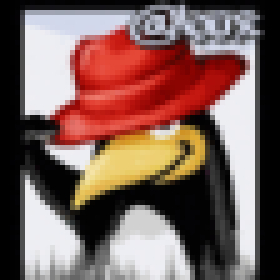
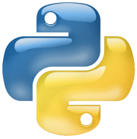
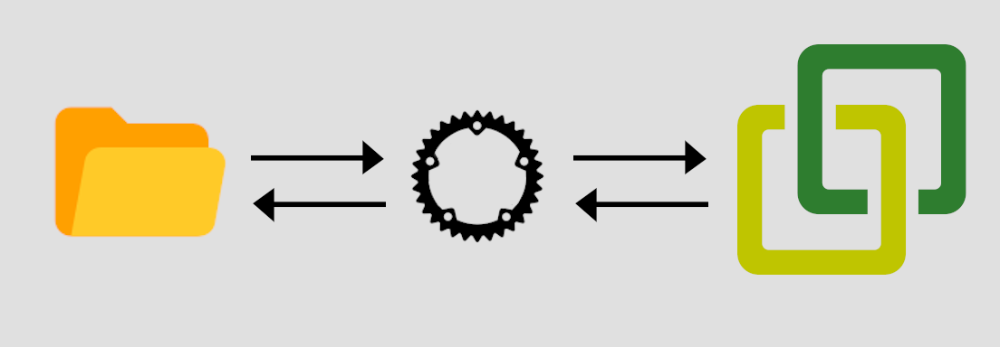
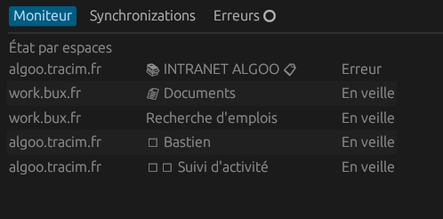
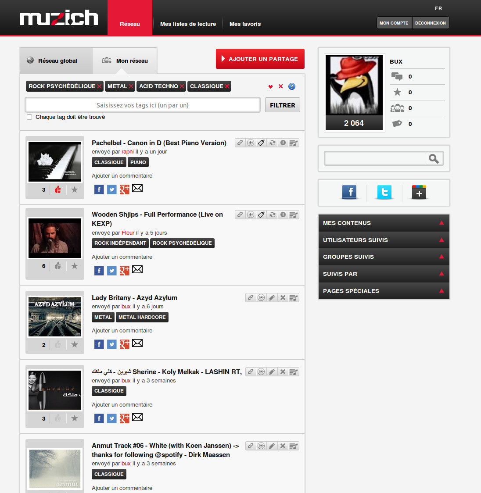
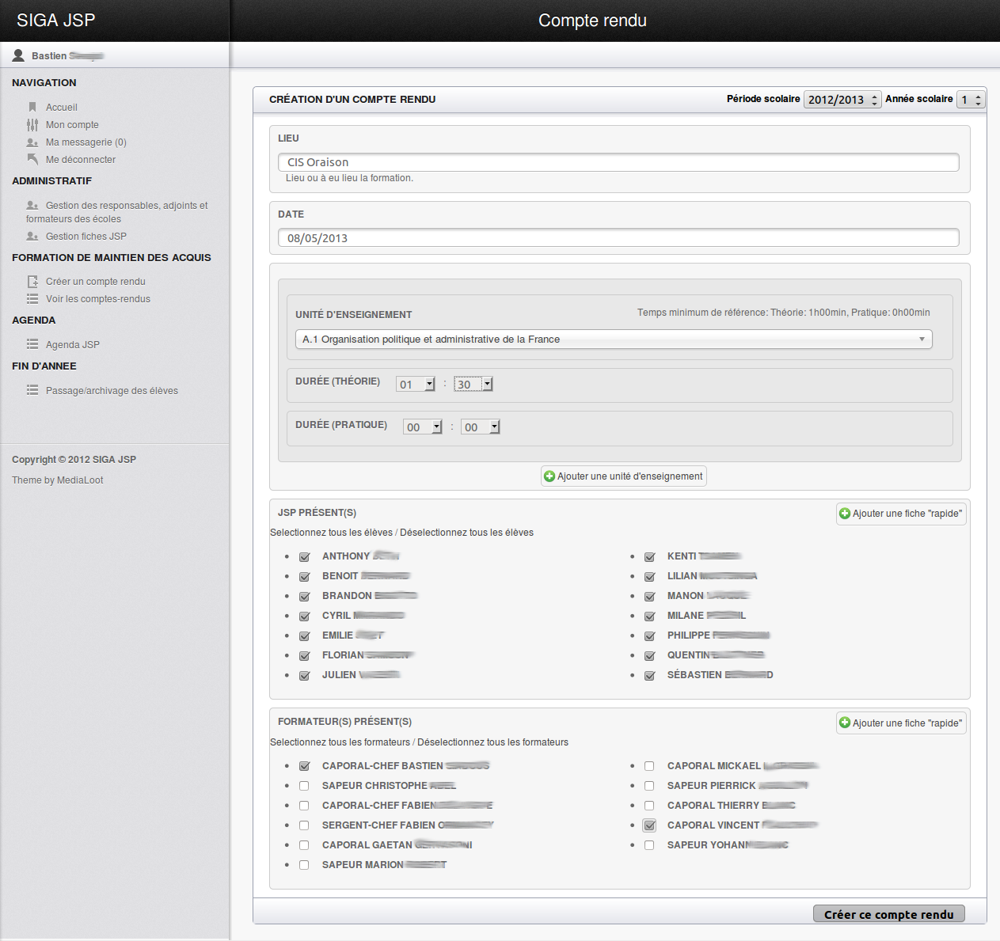
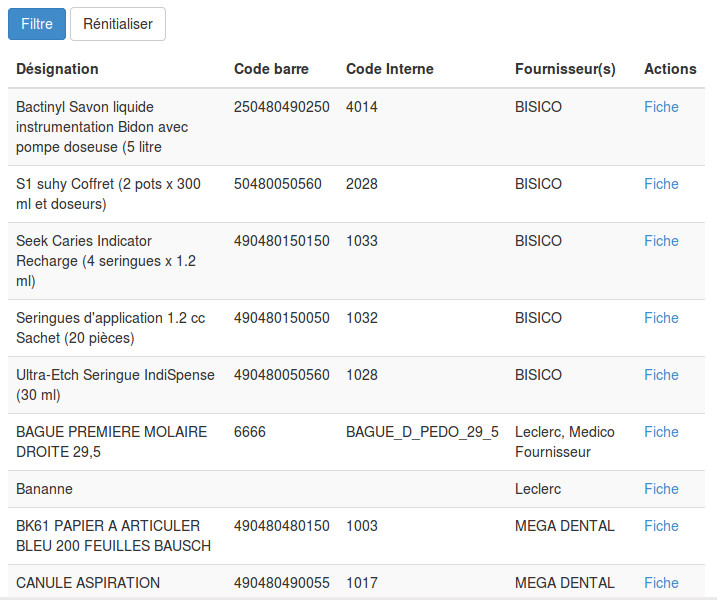
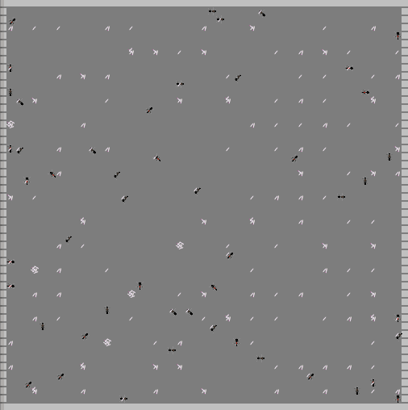
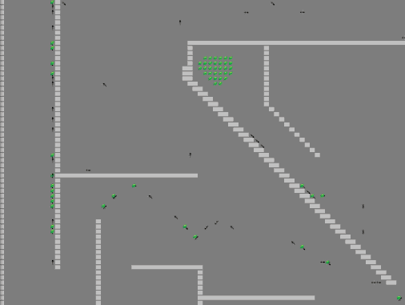
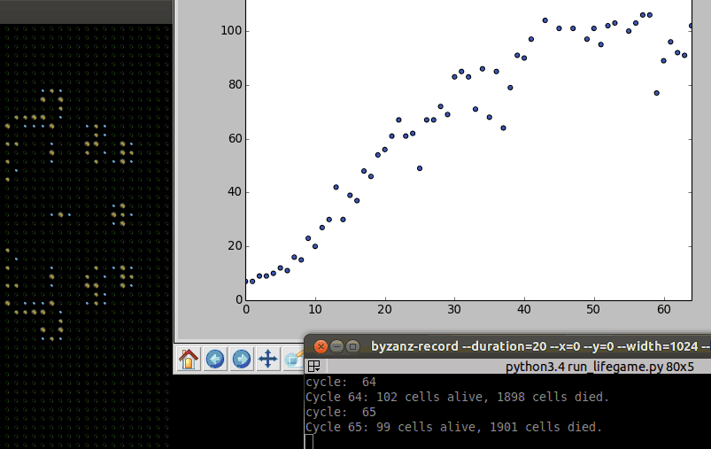

Rolling
Rolling
Jeu multijoueurs de survie/rôle play/gestion dans un monde ouvert et persistant.


Un jeu libre et multi-plateforme de combats tactiques en temps réel sur le thème de la seconde guerre mondiale, inspiré du jeu éponyme


TrSync sert à synchroniser des dossiers locaux avec des espaces de travail du logiciel Tracim.
Jeu multijoueurs de survie/rôle play/gestion dans un monde ouvert et persistant.

Muzi.ch est le résultat de l'association de ma passion pour la conception logicielle et de mon vif interret
pour la musique. Son objectif est de faciliter le partage et la découverte de la musique proposée
par des sites comme Soundcloud, Jamendo, [...]. Le tout étant articulé autour d'un système de tags,
réputation, liste de lecture, etc ...
Technologies utilisés: PHP5, Symfony2, Javascript,
jQuery, MySQL, MongoDB.
Graphisme: Floor 26 Studio

Développé dans le cadre de la société Cairnel Softs SIGA est une application destinée à la gestion
des formations des jeunes sapeurs-pompiers.
Technologies utilisés: PHP5, Symfony2, Javascript,
jQuery, MySQL, MongoDB.

Développé dans le cadre de la société Cairnel Softs
et en partenariat avec un cabinet dentaire, le système de gestion
DjStock est une application de gestion de stock qui convient a toute
type de TPE.
Technologies utilisés: python, django, Javascript,
jQuery, MySQL.


Intelligine est un projet dont l'objectif est de représenter le comportement d'insectes sociaux dans le but de faire émerger une forme d'intelligence collective.
Le simulateur adopte une stratégie dite « bottom-up » où l'on se focalise sur la représentation d'individus au lieu de l'objectif final qui est le résultat de leurs interactions. C'est la complexité et la quantité des interactions individu à individu et individu à environnement qui nous intéresse ici. Le résultat de l’exécution, bien que déterministe, ne peut être connu à l'avance. Le but recherché est une émergence, c'est-à-dire un comportement qui :
L'exercice du projet intelligine est de proposer un projet structuré autour de cet objectif tout en permettant à différents participants de moduler la simulation afin de pouvoir explorer différentes stratégies.
Le projet s'appuie sur le framework Synergine.
